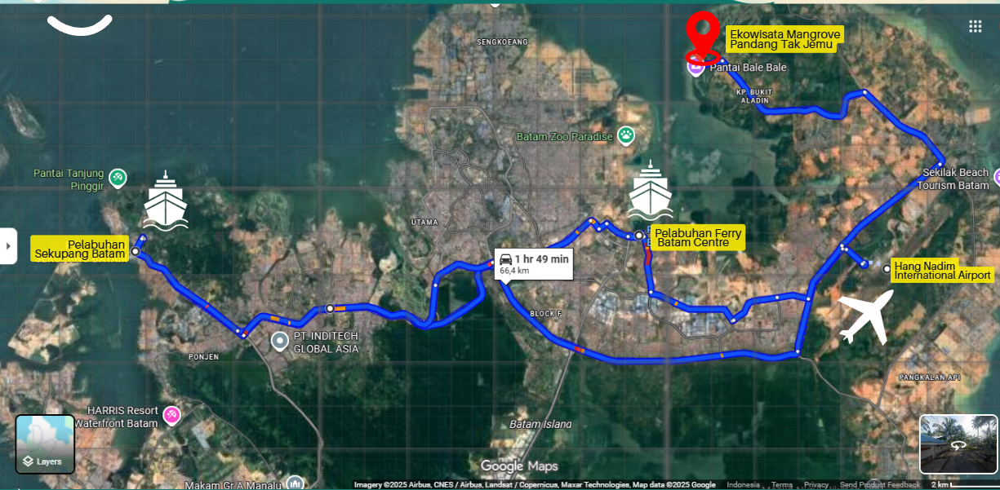
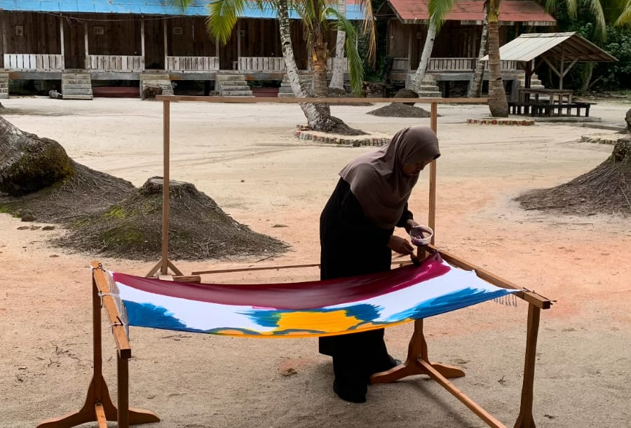

26 Desember 2025
Desa Wisata Kampung Tua Bakau Serip yang dikenal dengan nama Ekowisata Mangrove Pandang Tak Jemu merupakan salah satu wisata yang mengesankan lho, travelers!🌿 Bagaimana tidak, kita disuguhi oleh pemandangan ekosistem bakau yang masih terjaga hingga saat ini, meskipun usianya sudah lebih dari 300 tahun. Fauna dan flora di sini juga beragam dan unik yang membuat kita kagum.. Tidak hanya itu, ekowisata juga memiliki spot hidden gem yang keren banget, yaitu “Negeri Jiran” di mana kita bisa melihat Singapura dan Malaysia dengan lebih dekat. Apalagi kalau travelers hobi mantengin dan fotoin sunset, wajib banget sih berkunjung ke sini. Ngomong-ngomong soal berkunjung, travelers sudah tahu mengenai rute menuju Ekowisata Mangrove Pandang Tak Jemu? Kalau belum, ga usah khawatir. Mimin hadir dengan panduan akses yang detail dan deskriptif, jadi travelers ga bakal kesulitan untuk berkunjung ke tempat wisata semenarik ini nanti!

Kamu juga bisa cek langsung lokasi lengkapnya di Google Maps melalui link berikut: 🗺️ Alam Mangrove Pandang Tak Jemu Ini adalah denah rute yang bisa travelers ikuti untuk sampai ke Ekowisata Mangrove Pandang Tak Jemu. Kamu dapat berkunjung ke tempat wisata dengan kendaraan pribadi (mobil, motor) atau kendaraan umum (bus). Apabila kamu berasal dari luar kota/negara, menaiki kapal dan pesawat untuk pergi ke Batam, kamu bisa memesan gocar, maxim car, atau naik bus dari titik jemput di mana kamu berada. Kalau udah sampai di Ekowisata Mangrove Pandang Tak Jemu, ga mungkin kan cuman aimlessly wandering around lihat bakau atau sunset🌅? Karena itu, travelers harus tahu kalau ekowisata ini punya banyak kegiatan seru dan informatif yang bisa dilakuin selama di sini. Travelers bisa menjelajah hutan mangrove dengan kapalnya, jadi bisa melihat bakau dengan lebih dekat. Pemandu akan menyediakan informasi yang detail terkait mangrove, jadi travelers punya bekal ilmu setelah berkeliling menikmati pemandangan bakau yang luar biasa🌿. Setelah itu, travelers juga bisa ikut program konservasi yang ada di ekowisata ini, yaitu menanam bibit mangrove. Jadi travelers secara langsung ikut melestarikan keberadaan bakau dengan menanam si bakal Rhizophora apiculata yang akan hidup hingga ratusan tahun lamanya; menjadi garda terdepan untuk melindungi pesisir pantai dari abrasi. Travelers juga bisa menemukan beragam fauna dan flora seperti yang telah mimin sebut di awal. Untuk fauna ada:
Sementara untuk flora ada api-api, pidada, tangar/lacang, berus/tumu, ketapang, pandan pudak, dan buluh/melanding. Aktivitas berikutnya adalah menjelajah spot-spot instagramable. Ekowisata Mangrove Pandang Tak Jemu menghadirkan dua spot terbaik untuk travelers yang photoholic: Lorong Cinta dan Negeri Jiran. Kalau kamu tipe yang suka mandang-mandang sambil jalan-jalan di atas jembatan kayu yang nostalgic, kamu harus jelajahi Lorong Cinta. Kalau kamu tipe yang doyan jalan-jalan di pantai sambil ngejar sunset kece buat feed Instagram, wajib banget mampir ke Negeri Jiran! Dari sini, kamu bisa dapetin view sunset yang super aesthetic bahkan bisa ngelihat langsung Singapura dan Malaysia dari kejauhan! ✨Pro tip dari mimin: datang sekitar jam 5 sore, biar dapet golden hour yang bikin hasil fotomu breathtaking.

Jangan lupa cobain aktivitas kece satu ini, bikin batik dan anyaman bareng warga lokal! Awalnya mungkin keliatan gampang, tapi pas nyoba sendiri, seru banget dan bikin betah. Bonusnya, hasil karyamu boleh dibawa pulang. Liburan dapet, skill baru juga dapet! Lagi jalan-jalan ke Mangrove Pandang Tak Jemu? Ingat, jangan cuma nikmatin keindahannya, tapi juga ikutan jagain! Jangan males buang sampah di tempatnya, ya! Aksi kecilmu bisa bantu mangrove tetap kece dan nggak rusak. Biar wisata tetap hits dan alamnya juga aman😎.